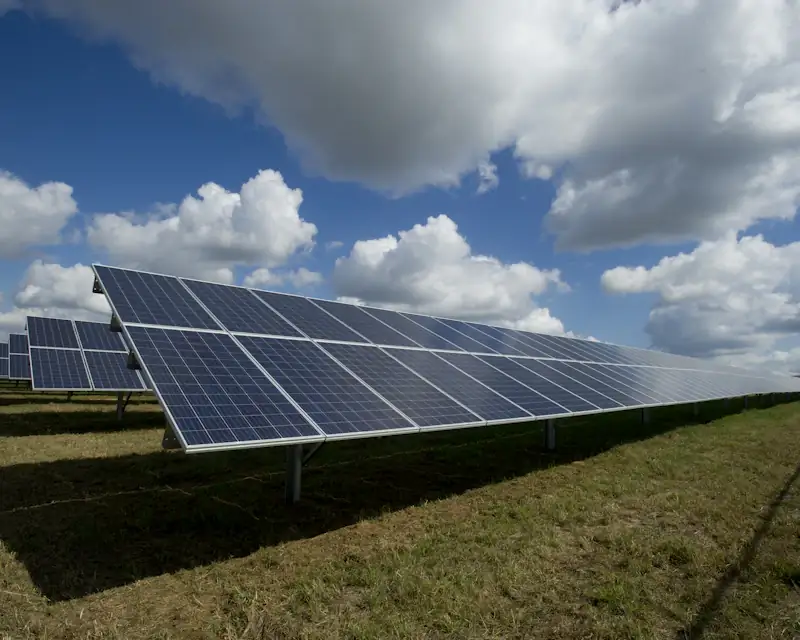
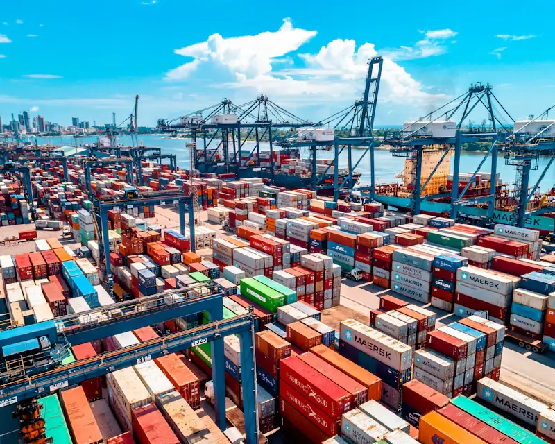

01
Market
Is the opportunity real?
Demand, competition, cost structure and the commercial logic behind a sector, before capital is committed to it.
Africa-focused investment advisory
We help investors, institutions and development partners navigate markets, strengthen investment climates and build the partnerships that make investment work.
The premise
Fifty-four countries, eight regional blocs and no single answer to any commercial question worth asking.
Investment succeeds where the specifics are understood: which institution grants the approval, which partner can actually deliver, what the input costs really are, and which of a market’s stated intentions have been implemented.
Africa Rising Investments works at that level of specificity. We bring regional perspective and practical advisory support to organisations assessing an opportunity, entering a market, or working to improve the conditions under which private investment happens. Our work is grounded in the institutions themselves: how investment promotion agencies operate, how reform programmes are designed, and how public and private counterparts actually reach agreement.
Our method
Whatever the sector or the scale, an engagement runs through the same four lenses. They keep the analysis honest and the advice practical.
01
Is the opportunity real?
Demand, competition, cost structure and the commercial logic behind a sector, before capital is committed to it.
02
Who has to say yes?
Approvals, incentives, regulators and investment-promotion channels, mapped to the decision actually in front of you.
03
Who do you need beside you?
Local operators, public counterparts, financiers and associations, with their roles and interests clearly assessed.
04
What actually gets it built?
Sequencing, land, permits, people and the practical realities that determine whether a plan survives contact with the market.
Expertise
From an early market question to institutional coordination, each engagement is shaped around the specific decision you need to make.
Opportunity assessment, positioning and decision support grounded in local context.
Sector research, opportunity mapping and policy analysis that turns information into a position.
Practical guidance for organisations evaluating, entering or expanding in East African markets.
Navigation through procedures, stakeholders and investment-promotion channels, with the next practical step always visible.
Programmes that improve business environments, investor confidence and sustainable private-sector growth.
Advice on regional integration, investment policy, promotion and economic development.
Sector perspective
The sectors below reflect the firm’s regional experience and the subject areas covered by the reference material in our investment library.
Primary production, horticulture, livestock and the processing layer that captures value regionally.
Transport corridors, logistics, ports, rail and the connectivity that determines what a market can actually move.

Generation, transmission and access, and their implications for industrial investment.
Import substitution, light manufacturing and export-oriented production under regional trade arrangements.
Assets, operations and the regulatory environment, assessed commercially rather than promotionally.

Regional trade arrangements, financial-sector depth and the instruments that make transactions work.
Insights
Analysis of African markets, investment policy and market entry. Shorter notes appear each week in the Weekly Brief.
Regional analysis
Three official East African investment publications, none of them current. Read carefully, they still answer questions a 2026 investor is asking.
Investment library
Official East African investment publications, each with its publisher, date and an honest note on its continued uses, alongside a current reference on the Community’s eight partner states and their investment promotion agencies.
01
East African Community with the African Development Bank, October 2013. 109 pages across regional overview, country profiles and ten sector chapters.
02
East African Community Secretariat, first edition, c. 2009. A short orientation to the Community’s investment framework.
03
East African Community, c. 2009–2010. A sector-by-sector survey with incentives, EPZ regimes and institutional contacts.
Published by the East African Community and the African Development Bank and presented here as dated reference material.
Common questions
Straight answers to what prospective clients ask first.
We advise investors, companies, governments and development partners on African markets: assessing whether an opportunity is commercially real, mapping the institutions and approvals a decision depends on, identifying credible partners, and supporting the practical work of entering or expanding in a market. Engagements range from a single research question to a sustained advisory relationship.
Our core depth is East Africa and the East African Community, which now spans eight partner states. We also work on continent-wide questions where regional comparison is needed, for example when an investor is choosing between East, West and Southern African entry routes.
It depends on the market, the sector and the structure you choose; requirements differ across partner states and change over time. Rather than a general answer, we establish what applies to your specific case, which institutions administer it, and whether a partner is a legal requirement, a practical advantage, or neither.
With a short conversation about the decision you are facing. That is normally enough to establish whether we can help, what shape the work would take and roughly what it involves. There is no charge for that first conversation.
Yes. Rapporteur and conference services are a distinct part of the practice, covering investment conferences, institutional meetings and stakeholder forums.
Tell us the market, the sector and the decision. A first conversation costs nothing and usually clarifies more than a brief does.